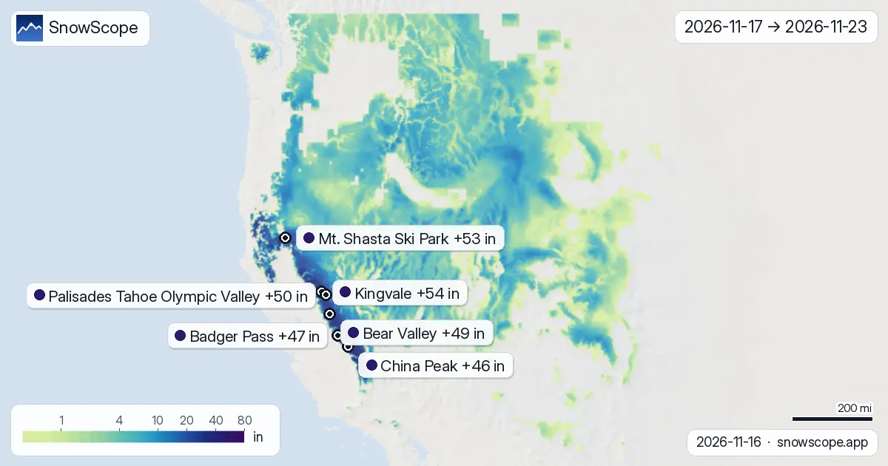
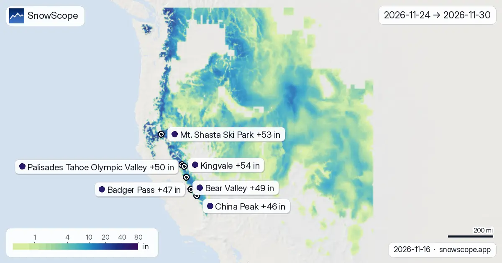

US West snow outlook to 30 November: 54 in at Kingvale, 53 in at Mt. Shasta Ski Park
The two-week picture in the US West, 17 November to 30 November, drawn from the two global models that reach two weeks, ECMWF and GFS. Middle of the two on the maps, low and high of the two in the text: that is the rule of this daily series. The most goes to Kingvale: about 54 in (136 cm) on its upper slopes, 33 in (84 cm)–74 in (188 cm) depending on the model, then Mt. Shasta Ski Park with 53 in (134 cm). Every number here is an estimate with some uncertainty; the trend over several days is usually more reliable than one value.
See the live snow forecast for Kingvale in the SnowScope appSnow depth, powder alerts and the 3D map, free.
Resort by resort, the next 14 days
Kingvale (United States): about 54 in (136 cm) in 14 days (33 in (84 cm)–74 in (188 cm) between the models), 36 in (92 cm) in the first week and 17 in (44 cm) in the second. Mark 19 November: that is the biggest day, with 16 in (40 cm), out of 7 days at 5 cm or more.
Mt. Shasta Ski Park (United States): about 53 in (134 cm) in 14 days (32 in (82 cm)–73 in (186 cm) between the models), 28 in (70 cm) in the first week and 25 in (64 cm) in the second. Mark 18 November: that is the biggest day, with 15 in (37 cm), out of 6 days at 5 cm or more.
At Palisades Tahoe Olympic Valley (United States) the two weeks add up to about 50 in (128 cm) (35 in (88 cm)–66 in (168 cm) depending on the model): 33 in (83 cm) by the end of the first week, then 18 in (45 cm) more. Mark 19 November: that is the biggest day, with 15 in (37 cm), out of 7 days at 5 cm or more.
Bear Valley (United States): about 49 in (124 cm) in 14 days (34 in (87 cm)–63 in (161 cm) between the models), 34 in (87 cm) in the first week and 15 in (37 cm) in the second. Mark 19 November: that is the biggest day, with 19 in (47 cm), out of 5 days at 5 cm or more.
At Badger Pass (United States) the two weeks add up to about 47 in (119 cm) (33 in (83 cm)–61 in (155 cm) depending on the model): 37 in (93 cm) by the end of the first week, then 10 in (26 cm) more. The snowiest day is 19 November with 21 in (54 cm); 6 days bring 5 cm or more.
At China Peak (United States) the two weeks add up to about 46 in (117 cm) (31 in (80 cm)–61 in (155 cm) depending on the model): 36 in (92 cm) by the end of the first week, then 10 in (25 cm) more. The snowiest day is 19 November with 22 in (56 cm); 6 days bring 5 cm or more.
| Resort | Snow depth | New snow, 72 h | Coming, next days | Top |
|---|---|---|---|---|
| Kingvale | 10 in (25 cm) | 15 in (38 cm) | 27 in (69 cm) | – |
| Mt. Shasta Ski Park | 20 in (50 cm) | 15 in (38 cm) | 19 in (48 cm) | 7,539 ft (2,298 m) |
| Palisades Tahoe Olympic Valley | 16 in (40 cm) | 13 in (32 cm) | 26 in (65 cm) | 8,743 ft (2,665 m) |
| Bear Valley | 22 in (56 cm) | 14 in (35 cm) | 27 in (68 cm) | 8,484 ft (2,586 m) |
| Badger Pass | 10 in (25 cm) | 11 in (28 cm) | 28 in (72 cm) | 7,795 ft (2,376 m) |
| China Peak | 7 in (19 cm) | 9 in (23 cm) | 34 in (86 cm) | 8,629 ft (2,630 m) |

The snow still to come
Up to 27 in (69 cm) of new snow is forecast at Kingvale over the next days.
Forecasts move: the timing is usually more reliable than the totals, so check again two days before you go.
At about 7,034 ft (2,144 m), Kingvale has 6 in (16 cm) today; a normal 16 November has 2 in (4 cm) there.
Only one winter in ten has more than 17 in (42 cm) on this date.
A week ago the same spot had 0 in (0 cm).
In past winters the best snow at Kingvale usually came early March / mid-March.

New snow by height
A height ladder for the fortnight, each rung the typical value and the snowiest quarter of all the terrain at that level: between 3,281 ft (1,000 m) and 4,921 ft (1,500 m): typically 2 in (5 cm), the snowiest quarter of that band 6 in (15 cm) or more; between 4,921 ft (1,500 m) and 6,562 ft (2,000 m): typically 4 in (9 cm), the snowiest quarter of that band 8 in (21 cm) or more; between 6,562 ft (2,000 m) and 8,202 ft (2,500 m): typically 5 in (13 cm), the snowiest quarter of that band 9 in (23 cm) or more; between 8,202 ft (2,500 m) and 9,843 ft (3,000 m): typically 8 in (21 cm), the snowiest quarter of that band 12 in (31 cm) or more; between 9,843 ft (3,000 m) and 14,764 ft (4,500 m): typically 9 in (23 cm), the snowiest quarter of that band 14 in (35 cm) or more.

The days to watch
Snow days across the region, over the 193 resorts in our list: Wednesday 18 November (75 of 193 resorts at 5 cm or more, up to 15 in (37 cm) at Mt. Shasta Ski Park), Tuesday 24 November (69 of 193 resorts at 5 cm or more, up to 7 in (18 cm) at Kingvale), Wednesday 25 November (81 of 193 resorts at 5 cm or more, up to 14 in (35 cm) at Mt. Shasta Ski Park) and Thursday 26 November (76 of 193 resorts at 5 cm or more, up to 6 in (16 cm) at Jackson Hole).
First week against second week
Timing: 53 % of everything the maps show for the region lands between 17 November and 23 November; the second week, 24 November to 30 November, holds the remainder.
Front-loaded: Kingvale, Mt. Shasta Ski Park, Palisades Tahoe Olympic Valley, Bear Valley, Badger Pass and China Peak get most of their snow in the first week.
On the map, about 224,108 sq mi (580,436 km²) of mountain terrain get 20 cm or more over the two weeks, and 36,807 sq mi (95,330 km²) get 50 cm or more.
How to read the maps
Three pictures, one scale: the fortnight's total first, then week one and week two on their own. Pale colours are small amounts, the dark end of the scale is a lot of snow, and grey terrain gets next to nothing. The pins name the resorts and their upper-slope value.
Honest reading: beyond day seven the atmosphere has many ways to go, and the two models often pick different ones. That is why the second-week map is the one to watch move from day to day, and why we give a low and a high with every total.
Tips for skiers
- A big second-week total with a wide range is a reason to keep watching, not yet a reason to book.
- The 0 °C level is a forecast and can shift by several hundred metres, so look at the map again the day before you leave.
- Before any off-piste or touring day, read the official avalanche bulletin (links below).
- Snow on the map does not mean a resort is open: check lifts and dates on the resort's website.
About these numbers
Resort snow depths are the deepest snow on the resort's upper slopes from the SnowScope snow model (about 1 km, run of 16 November); they are estimates for an area, not a measurement at one point. Station values are measurements on the date shown. Forecasts can change. Always read the official avalanche bulletin before going off-piste.
Official avalanche bulletins: avalanche.org
Cite this report
For research, teaching or the press: the numbers and charts are free to reuse under CC BY 4.0 with this citation.
SnowScope (2026), US West snow outlook to 30 November: 54 in at Kingvale, 53 in at Mt. Shasta Ski Park, https://snowscope.app/blog/en/2026/11/us-west-2-week-snow-forecast-maps-16-november-2026.html, accessed 2026-11-16
SnowScope (Atlas Labs). (2026, November 16). US West snow outlook to 30 November: 54 in at Kingvale, 53 in at Mt. Shasta Ski Park. SnowScope snow reports. https://snowscope.app/blog/en/2026/11/us-west-2-week-snow-forecast-maps-16-november-2026.html
BibTeX
@misc{snowscope2026uswest2weeksnowforecastm,
author = {{SnowScope (Atlas Labs)}},
title = {US West snow outlook to 30 November: 54 in at Kingvale, 53 in at Mt. Shasta Ski Park},
year = {2026},
month = nov,
howpublished = {\url{https://snowscope.app/blog/en/2026/11/us-west-2-week-snow-forecast-maps-16-november-2026.html}},
note = {Published 2026-11-17 06:57 UTC; accessed 2026-11-16}
}· CC BY 4.0 · Methods, data and tools →
Kingvale: snow and temperature by height, this winter vs last (tools) →
Follow Kingvale
Free: a message when fresh snow is coming, and the forecast every morning.
More snow reports

Park City, Utah snowfall forecast for 13 November 2026: almost no snow on the ground right now, about 5 in near the summit from the weekend storm with a snow level of 7,400 to 7,700 ft, rain at the base, and about 12 in up top over the week.

Deer Valley ski conditions on 13 November 2026: no real snow on the ground yet, about 4 in near the top from the weekend storm, rain on the low East Village side below about 6,700 to 7,600 ft, and 11 in up top over the week.